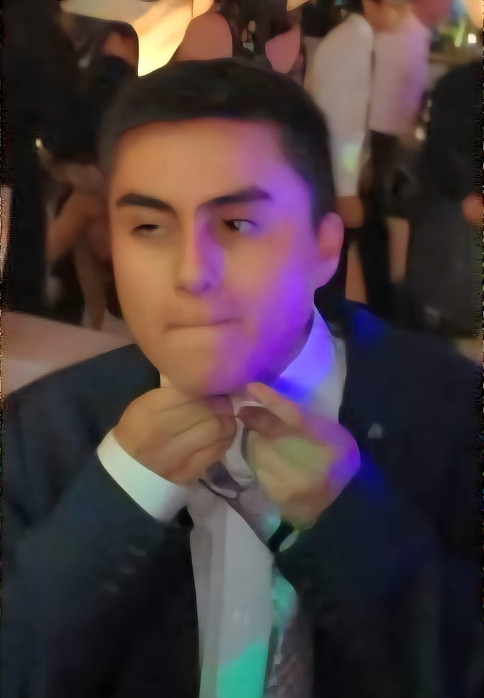

Alejandro Giuseppe Gonzalez Sanchez
Experiencia
- Mesero medio tiempo: Cevichería Costa Azul (Arequipa), Cevichería El Tiburón (Cañete)
- Backoffice: BurguerMaN - Cayma
Habilidades
- Comunicación asertiva
- Paciente, cordial y empático
- Excel, SPS, Canva
Cursos Actuales
- Costos y Planeamiento Presupuestal
- Estadística y Probabilidades
- Análisis de Datos
- Cálculo en Varias Variables
- Zapatería Molecular
Profesor: Ernesto Cuadros Vargas